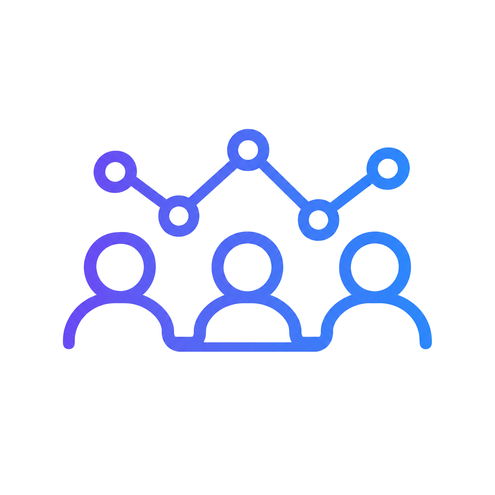

Para empresas
NR-1: o que sua empresa precisa saber sobre riscos psicossociais
A atualização da norma amplia o olhar para fatores do trabalho que pesam na saúde mental da equipe. A Sefare conduz escuta dos colaboradores, análise coletiva e orientação para um plano de ação — apoio à gestão desses riscos, dentro do escopo contratado.
Conte o tamanho da equipe e sua principal dúvida. Vamos conversar sobre o escopo do trabalho.
Alexandre Chaves Costa · Psicólogo · CRP 06/213517
Seus melhores profissionais estão indo embora?
Sinais no dia a dia — rotatividade, faltas, conflitos e queda nas entregas — muitas vezes apontam para o clima interno, não só para “falta de vontade”.
- Rotatividade Bons talentos pedem demissão, levam conhecimento embora e a empresa precisa contratar e treinar de novo.
- Faltas Atestados frequentes e ausências de última hora começam a sobrecarregar quem fica na operação.
- Conflitos Desentendimentos entre setores e ruídos de comunicação travam processos simples da rotina.
- Produtividade baixa A equipe parece desanimada, perde prazos e entrega menos do que tem capacidade de realizar.
Uma avaliação psicossocial ajuda a enxergar o que pesa na rotina e a orientar decisões com base no retrato do grupo.
Como a Sefare Empresas apoia a sua gestão
Um trabalho de escuta e análise técnica para ajudar a enxergar o que pesa na rotina da sua empresa.
- Inventário psicossocial / PGR-GRO Levantamento técnico dos fatores de estresse e convivência no trabalho, para embasar decisões de saúde e segurança ocupacional.
- Condução técnica independente Uma condução neutra e sem vínculos internos, permitindo que as pessoas falem de forma franca sobre as pressões do cotidiano.
- Sigilo para quem responde Os resultados são apresentados em grupo, para a empresa não ver respostas individuais.
- Gestão personalizada Ações práticas desenhadas a partir do que o inventário apontar, respeitando a realidade e o tamanho do seu negócio.
Conte o tamanho da equipe e sua principal dúvida. Vamos conversar sobre o escopo do trabalho.
O que sua empresa recebe
Entregas típicas do trabalho. O que entra no pacote final depende do contrato combinado com a sua empresa.
-
Relatório do grupo Retrato coletivo do clima e dos fatores psicossociais observados — sem expor respostas individuais.
-
Plano de ação Orientação prática para a gestão lidar com os pontos de atenção identificados, no ritmo e no tamanho do negócio.
-

Documento de apoio ao PGR Material que pode apoiar o inventário de riscos psicossociais no Programa de Gerenciamento de Riscos, conforme o escopo contratado.
Como funciona
-
Alinhamento inicial
Entendemos a realidade atual da sua empresa, a dinâmica das equipes e as principais preocupações da gestão.
-
Aplicação do inventário
Os colaboradores participam da escuta técnica conduzida pelo psicólogo responsável, em ambiente protegido.
-
Retrato coletivo
Consolidamos os dados em um relatório do grupo, sem expor nenhum colaborador.
-
Plano de ação
Apresentamos à gestão caminhos viáveis e personalizados para lidar com os pontos de atenção identificados.
O escopo do trabalho e as etapas de acompanhamento são combinados conforme o contrato firmado com a sua empresa.
A segurança da sua equipe vem em primeiro lugar
Os resultados são apresentados em grupo, para a empresa não ver respostas individuais.
O RH e a diretoria recebem o panorama geral do coletivo, sem nomes associados às respostas.
Com essa proteção ética, os funcionários podem se sentir mais seguros para falar sobre o ambiente de trabalho.
Quem está por trás da Sefare

Alexandre Chaves Costa
Psicólogo · CRP 06/213517, responsável técnico pela Sefare
- Conduz avaliações psicossociais para empresas de Vinhedo e região.
- Compromisso com sigilo e ética profissional (Código de Ética).
- Apoio ao plano de ação a partir da análise coletiva.
Juliana, do atendimento comercial da Sefare, apresenta o primeiro contato com as empresas e encaminha a conversa para o alinhamento do escopo.
Dê o primeiro passo para cuidar do clima da sua empresa
Converse conosco para entender como estruturar o levantamento psicossocial no seu negócio.
Falar sobre minha empresaConte o tamanho da equipe e sua principal dúvida. Vamos conversar sobre o escopo do trabalho.
Ou ligue: (19) 99632-8300
Perguntas frequentes
O que é o inventário psicossocial?
É um mapeamento técnico dos fatores de estresse e convivência no trabalho. Ele ajuda a dar clareza sobre o clima interno e apoia as obrigações da NR-1 (PGR/GRO).
O RH ou a diretoria vê o que cada pessoa respondeu?
Os resultados são apresentados em grupo. A empresa recebe o relatório consolidado, sem ver respostas individuais.
Quem conduz a avaliação?
Um psicólogo responsável técnico, Alexandre Chaves Costa, CRP 06/213517, com sigilo e ética profissional.
Quanto custa?
Depende do tamanho da equipe. O orçamento é feito na conversa, a partir do escopo e das necessidades da sua empresa.
O que recebo no final?
Em geral: relatório do grupo, orientação para um plano de ação e documento de apoio ao PGR. O que entra no pacote final depende do contrato.
Quanto tempo leva o processo?
O período varia de acordo com o total de funcionários e as áreas envolvidas. O cronograma é planejado de forma realista durante o alinhamento de cada contrato.
O serviço funciona para empresas pequenas?
Sim. O formato é flexível e atende negócios de pequeno e médio porte, com equipes de até cerca de 300 pessoas.
Como pedir uma conversa para entender o serviço?
Use o botão de WhatsApp, conte o tamanho da equipe e sua principal dúvida. Conversamos sobre o escopo do trabalho.